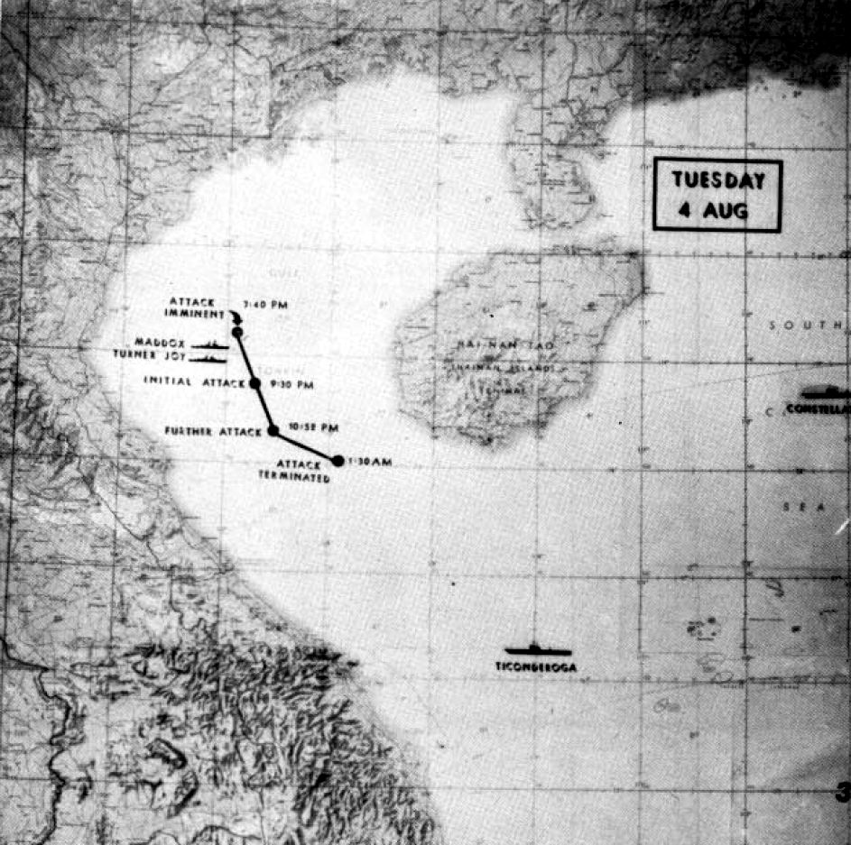
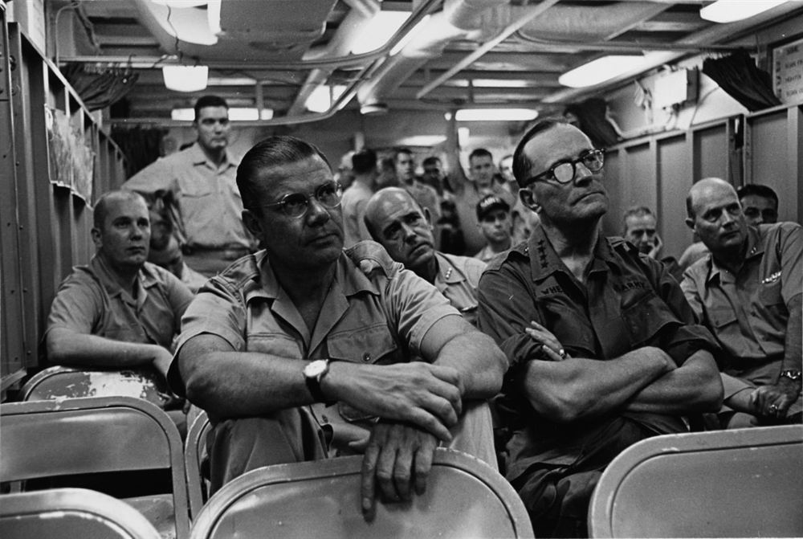
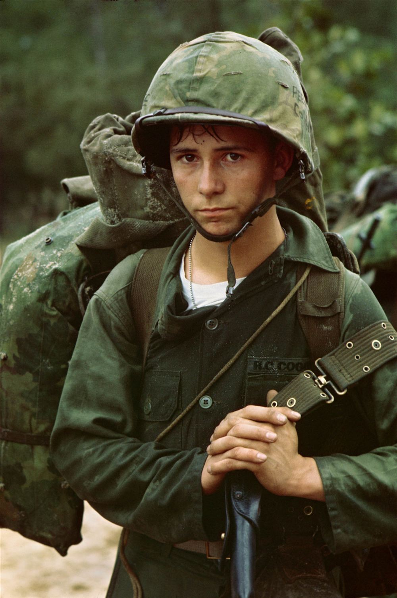
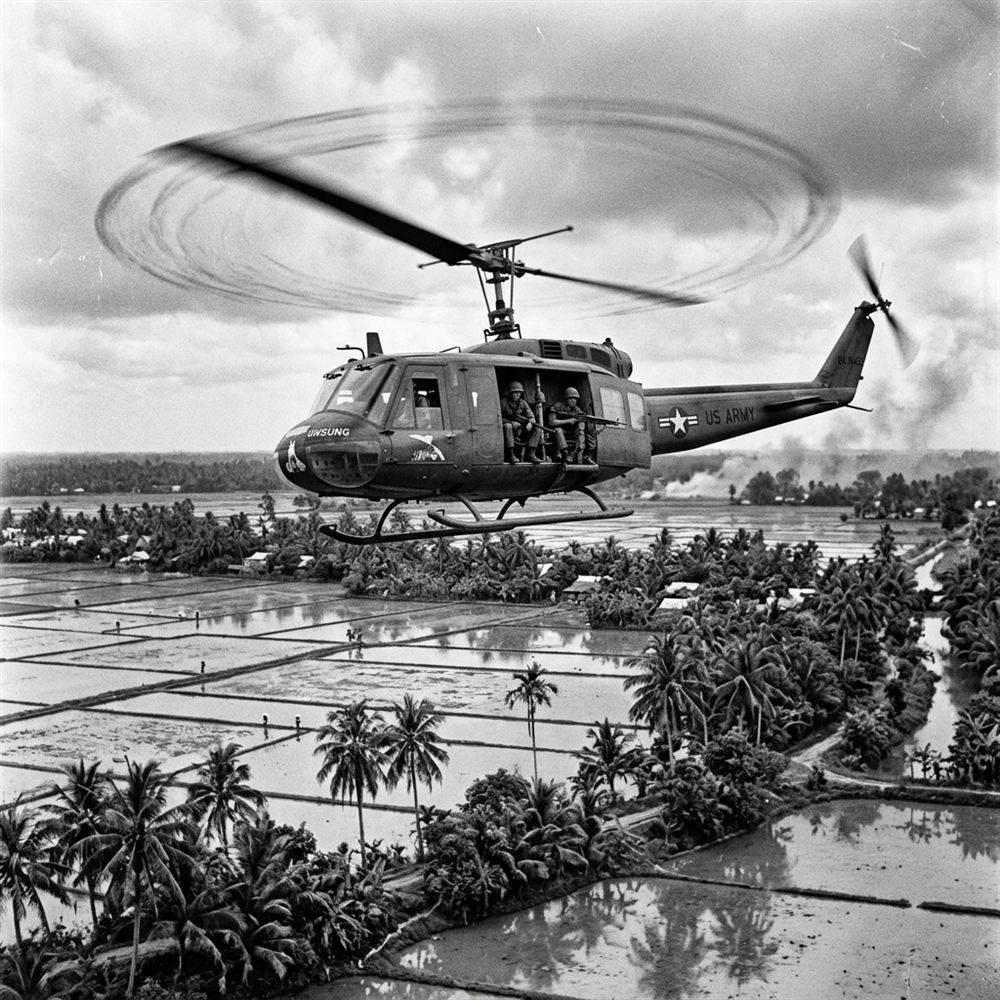
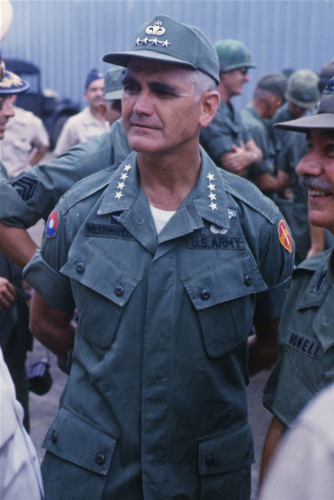
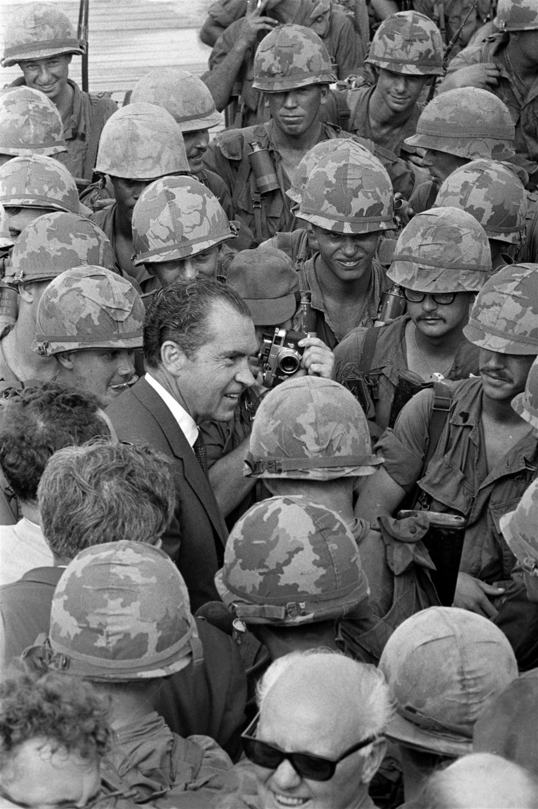
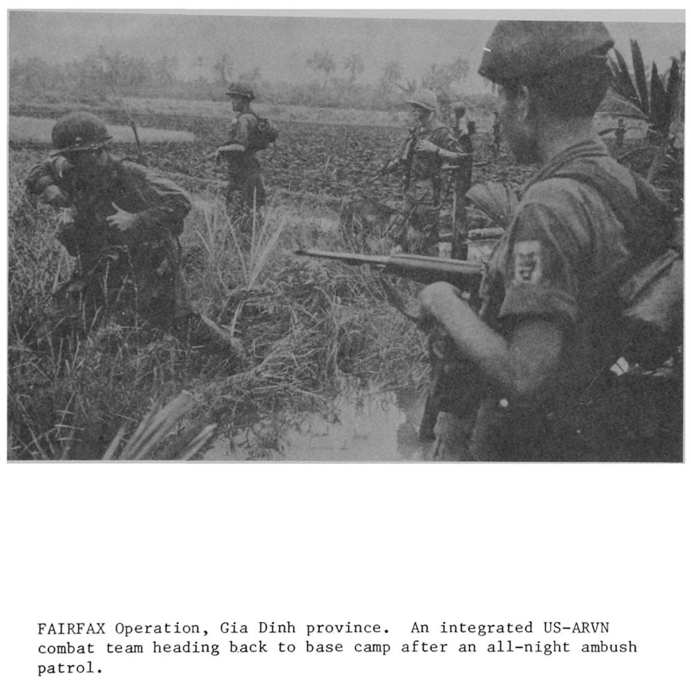
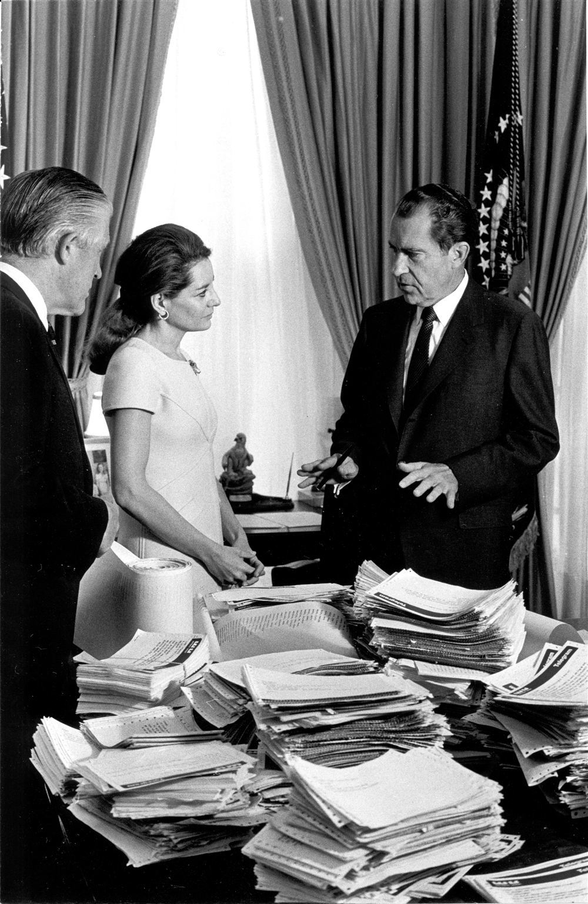
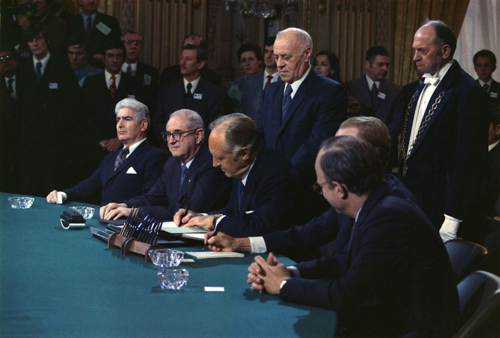

When John F. Kennedy became President in 1961, the situation in South Vietnam was deteriorating rapidly as the Vietcong took control of the countryside:
- Kennedy's Escalation: Kennedy drastically increased the number of US military 'advisors' in Vietnam, raising the total from around 900 to 16,000 by 1963. He also deployed elite US Special Forces (the 'Green Berets') and authorised the use of chemical defoliants (like Agent Orange) to destroy the jungle cover used by the Vietcong.
- The Strategic Hamlet Program (1962): To cut off the Vietcong from their peasant supporters, Kennedy and Diem launched the Strategic Hamlet Program, forcibly moving South Vietnamese peasants into fortified camps surrounded by barbed wire and armed guards.
- Failure of Hamlets: The program was a total disaster. Peasants deeply resented being forced off their sacred ancestral lands and treated like prisoners. Corrupt officials failed to provide enough food, which drove even more starving and angry peasants into the arms of the Vietcong.
- The Overthrow of Diem (1963): In 1963, Diem's persecution of Buddhists triggered a crisis, highlighted by Buddhist monk Thích Quảng Đức burning himself to death on a Saigon street. Realising Diem was too corrupt to win, the Kennedy administration gave a 'green light' to South Vietnamese generals. On 1 November 1963, a coup was launched; Diem and his brother were overthrown and assassinated, plunging the country into a chaotic period of weak, constantly changing military governments.
📝 Revision Task
To check your understanding of this topic, complete the following in your study notes:
- Write down the definition of the Domino Theory.
- List two specific reasons why the Strategic Hamlet Program backfired and increased support for the Vietcong.
Knowledge Check (Q4)
What controversial US-backed program forcibly relocated South Vietnamese peasants into fortified villages surrounded by barbed wire?
- A. Strategic Hamlets Program
- B. Operation Rolling Thunder
- C. Search and Destroy
- D. Vietnamization
Pair & Share Activity
Q5. What does this extreme act of protest reveal about the intensity of Buddhist opposition to Diem? How did this impact US support for Diem?
Active Tasks
Q6. Give two things you can infer from Source A about the Strategic Hamlet Program in Vietnam. (4 marks)
Q7. How did the US Domino Theory justify supporting Ngo Dinh Diem despite his undemocratic policies?
Q8. Why did Diem's favoritism toward Catholicism alienate the majority Buddhist population in South Vietnam?
Historian's Corner: ⚖️ Dual Interpretation: Support for Ngo Dinh Diem
Scaffolding Clue: Evaluate the author, audience, and motive for both sources. For written accounts, consider if the author has political reasons to justify their actions. For photographs, consider what may be excluded outside the camera's frame.
L2: KT 3.2: Why did the US send combat troops to Vietnam after the Gulf of Tonkin incident?
Learning Objectives
Recall & Retrieval
Vocabulary Check
The Golden Sentence: Choose TWO terms from the word bank. Write ONE grammatically sophisticated, historically accurate sentence connecting them using a causal conjunction (because, although, or consequently):
When Johnson took office, the South Vietnamese government was on the verge of collapse, making the communist Vietcong a more dangerous threat than ever before:
- Political Chaos in the South: Following the assassination of President Diem in 1963, South Vietnam suffered from extreme political instability. One weak military government was toppled by another in a series of constant coups, meaning the South Vietnamese leaders were too busy fighting each other to effectively fight the communists.
- Vietcong Successes: Taking advantage of this chaos, the Vietcong (supported by the North Vietnamese Army) gained massive ground. By 1964, they controlled roughly 35% of South Vietnam and were inflicting heavy defeats on the South Vietnamese Army (ARVN) in conventional battles, such as at Binh Gia.
- Attacks on Americans: The Vietcong began directly and aggressively targeting American military installations and personnel. In November 1964, they attacked the US airbase at Bien Hoa, and in February 1965, they launched a deadly raid on a US base at Pleiku, killing 8 Americans and destroying 10 aircraft.
Context: US Navy pilot flying over the Gulf of Tonkin on the night of August 4, 1964.
💬 Reflective Question: If the second Gulf of Tonkin attack was a 'ghost' event, how does this affect the moral and political justification for the US escalation of the war?
Knowledge Check (Q1)
What was the political and guerrilla organisation fighting against the US and South Vietnamese government?
- A. The Vietcong (National Liberation Front)
- B. The ARVN
- C. The Green Berets
- D. The SEATO Alliance
Think-Pair-Share: Q2 Why was the Gulf of Tonkin Resolution called a 'blank check' for President Johnson?
| 1. My Thoughts (Think) | 2. Partner's Thoughts (Pair) |
|---|---|

To save South Vietnam, Johnson needed to escalate US military action, but he needed a legal reason and public support. A controversial event at sea provided his administration with the pretext:
- The First Attack (2 August 1964): The US warship USS Maddox, conducting an intelligence-gathering mission, was approached and fired upon by three North Vietnamese torpedo boats in the Gulf of Tonkin. The Maddox returned fire and drove them off.
- The 'Phantom' Second Attack (4 August 1964): During a heavy storm, the crews of the Maddox and another ship, the Turner Joy, reported they were under a second torpedo attack.
- The Declassified Truth: It was later revealed that this second attack never actually happened. The reports were the result of bad weather, confused radar operators, and panic. However, President Johnson and his Secretary of Defense, Robert McNamara, ignored these doubts and told the US public that American ships had been the victims of "unprovoked aggression".
Knowledge Check (Q3)
What congressional resolution in August 1964 gave President Johnson authority to 'take all necessary measures' in Vietnam?
- A. The Gulf of Tonkin Resolution
- B. The War Powers Act
- C. The Geneva Accord
- D. The Truman Doctrine

The incident at sea provided the immediate catalyst for full-scale US military escalation:
- The "Blank Check": Using the Gulf of Tonkin incident to spark outrage, Johnson asked Congress for the power to retaliate. On 7 August 1964, Congress overwhelmingly passed the Gulf of Tonkin Resolution.
- Significance: This resolution gave the President the power to take "all necessary measures" to repel armed attacks and prevent further aggression in Southeast Asia. It effectively allowed Johnson to wage a full-scale war without Congress ever officially declaring war.
- The Bombing Campaign: Armed with this new power, and provoked by the Pleiku attack, Johnson launched Operation Rolling Thunder in early 1965—a massive, sustained bombing campaign against North Vietnam.
- Marines Land at Da Nang (March 1965): Shortly after, in March 1965, the first official US ground combat troops (3,500 Marines) waded ashore at Da Nang. By the time Johnson left office in 1969, over 500,000 American troops were deployed in Vietnam.
Knowledge Check (Q4)
What was the sustained aerial bombardment campaign against North Vietnam launched by LBJ in 1965 called?
- A. Operation Rolling Thunder
- B. Search and Destroy
- C. Operation Linebacker
- D. Strategic Hamlets

Aside from the immediate threat of the Vietcong and the Tonkin incident, Johnson's escalation was driven by deep-rooted Cold War fears:
- The Domino Theory and Containment: Like Eisenhower and Kennedy, Johnson firmly believed that if South Vietnam fell to communism, neighbouring countries would inevitably fall too, just like a row of dominoes.
- Personal and National Credibility: Johnson was deeply concerned about America's reputation and his own political standing. He felt that withdrawing would make the USA look weak and untrustworthy to its global allies.
- Domestic Politics: Facing a presidential election in 1964, Johnson did not want to be accused by Republican rivals of being "soft on communism" or be remembered as the President who "lost" Vietnam.
📝 Revision Task
To check your understanding of this topic, complete the following in your study notes:
- Explain in your own words how the events in the Gulf of Tonkin in August 1964 led directly to the passing of the Gulf of Tonkin Resolution.
- Describe the specific power this Resolution gave to President Johnson.
Knowledge Check (Q5)
How many US combat troops were stationed in Vietnam at the peak of American escalation in late 1968?
- A. Over 536,000 troops
- B. 50,000 troops
- C. 16,000 troops
- D. 1 million troops
Pair & Share Activity
Q6. If the second Gulf of Tonkin attack was a 'ghost' event, how does this affect the moral and political justification for the US escalation of the war?
Active Tasks
Q7. Explain why US military involvement in Vietnam escalated in the years 1964–68. (12 marks)
Q8. Why was the Gulf of Tonkin Resolution called a 'blank check' for President Johnson?
Q9. How did the transition from 'advisory' status to combat deployment in March 1965 change the nature of the war?
Historian's Corner: ⚖️ Dual Interpretation: Gulf of Tonkin Resolution
Scaffolding Clue: Evaluate the author, audience, and motive for both sources. For written accounts, consider if the author has political reasons to justify their actions. For photographs, consider what may be excluded outside the camera's frame.
L3: KT 3.3: Why did US military tactics (like bombing and search & destroy) fail to defeat the Vietcong?
Learning Objectives
Recall & Retrieval
Vocabulary Check
Conceptual Classification: Categorise the terms from the word bank into the two historical boxes below:
The Vietcong (VC) knew they could not defeat the technologically advanced US military in open, pitched battles. Instead, they relied on their deep knowledge of the local jungle terrain and used guerrilla warfare to wear down American morale:
- Hit-and-Run and Ambushes: The VC followed strict principles: retreat when the enemy attacks, raid when the enemy camps, and attack when the enemy tires. They never engaged in direct conventional battles, instead picking off enemy soldiers in ambushes before quickly disappearing into the jungle.
- 'Hanging onto the Belts': To counter America's massive advantage in air power and artillery, VC fighters stayed as close to US troops as possible during firefights. By engaging at such close quarters, the Americans could not call in bombing strikes for fear of hitting their own men.
- The Invisible Enemy: VC fighters did not wear military uniforms. They dressed in everyday clothing so they could hide in plain sight, making it nearly impossible for US soldiers to distinguish between innocent civilian peasants and the enemy.
- Booby Traps: Around 11% to 19% of all US casualties were caused by cheap, terrifying booby traps. The most common were punji sticks (sharpened bamboo stakes hidden in shallow, camouflaged pits, often smeared with excrement to cause infection), tripwires, and 'Bouncing Betty' mines that exploded at waist height.
- Tunnel Networks: The VC constructed hundreds of miles of complex underground tunnels, such as those at Cu Chi. These multi-level networks contained barracks, hospitals, and weapons factories, protecting them from US bombing and allowing them to move completely undetected.
- The Ho Chi Minh Trail: To keep their fighters armed, the VC relied on a 15,000km network of jungle paths known as the Ho Chi Minh Trail, which ran from North Vietnam through neutral Laos and Cambodia to secretly deliver Soviet and Chinese weapons to the South.
Context: A female Vietcong guerrilla fighter, interviewed about surviving search-and-destroy missions in the Cu Chi tunnels.
💬 Reflective Question: How did the Vietcong use the tunnels and hit-and-run tactics to render the US military's technological superiority ineffective?
Knowledge Check (Q1)
What cheap, deadly booby trap did the Vietcong construct using sharpened bamboo smeared with poison or dung?
- A. Punji stick pit
- B. Claymore mine
- C. Bouncing Betty
- D. Tripwire grenade
Think-Pair-Share: Q2 Why did the US reliance on 'body counts' as a measure of success distort the actual progress of the war?
| 1. My Thoughts (Think) | 2. Partner's Thoughts (Pair) |
|---|---|

The US military strategy relied heavily on their massive superiority in firepower, mobility (helicopters), and technology, aiming to force the communists into battles where a high 'body count' would ensure victory:
- Operation Rolling Thunder (1965–1968): In March 1965, the US launched a massive, sustained strategic bombing campaign against North Vietnam to destroy its industrial base and cut off the Ho Chi Minh Trail. It was largely a failure because North Vietnam was a pre-industrial nation with few factories, crucial war supplies came from China and the USSR (which the US could not bomb for fear of starting WW3), and the VC constantly repaired the trail.
- Search and Destroy: Using helicopters to fly platoons into hostile areas to search out and destroy VC camps. If a village was suspected of supporting the VC, troops would destroy it, often burning thatched homes to the ground (known as 'Zippo raids'). This tactic failed to win 'hearts and minds', resulted in high civilian casualties, and allowed the VC to simply move back in once US helicopters left.
- Chemical Weapons (Agent Orange & Napalm): To strip jungle cover and destroy crops, the US sprayed over 20 million gallons of Agent Orange (highly toxic weedkiller), causing long-term health issues and birth defects. They also dropped bombs containing napalm, a highly flammable petroleum jelly that stuck to skin and burned at 800°C to the bone, causing massive international outrage and fueling the anti-war movement.
Knowledge Check (Q3)
What tactic, devised by General Westmoreland, used helicopters to locate and kill Vietcong before leaving the area?
- A. Search and Destroy
- B. Strategic Hamlets
- C. Operation Rolling Thunder
- D. Pacification

In January 1968, the Vietcong and North Vietnamese forces launched a massive surprise attack during the Tet holiday, changing the course of the war:
- The Surprise Attack: On 30–31 January 1968, during the 'Tet' (Lunar New Year) holiday ceasefire, over 84,000 Vietcong and North Vietnamese troops launched a massive, highly coordinated surprise attack across South Vietnam, hitting over 100 towns, cities, and bases.
- The US Embassy: In a deeply shocking event, a suicide squad of VC guerrillas breached the walls of the US Embassy in Saigon, fighting American forces on the grounds.
- A Military Disaster for the VC: The VC failed to spark a civilian uprising, suffered between 37,000 and 58,000 casualties, and was virtually wiped out as an effective fighting force on the ground.
- A Political Defeat for the USA: Seeing live television footage of the fighting created a massive 'credibility gap'. Highly respected CBS anchor Walter Cronkite declared the war an unwinnable stalemate. Facing protests, President Johnson halted bombing and announced he would not seek re-election.
📝 Revision Task: The Turning Point
To check your understanding of the Tet Offensive, complete the following in your study notes:
- Define the tactic 'Hanging onto the belts'.
- Explain in two sentences why the Tet Offensive is considered a military victory for the USA but a political disaster.
Knowledge Check (Q4)
During the 1968 Tet Offensive, what highly fortified American diplomatic compound in Saigon was temporarily penetrated by Vietcong commandos?
- A. The US Embassy
- B. The White House
- C. Tan Son Nhut Airbase
- D. The Presidential Palace

Historians and observers analyze the nature of the conflict and its turning points through differing perspectives:
"The political situation in Saigon is progressively deteriorating... there seems little likelihood of establishing a government that can conduct effective military operations. By injecting substantial ground forces, we risk a progressive taking-over of the war. Once on the 'tiger's back' we cannot be sure of picking the place to dismount."
"The missions were incredibly risky; you didn't know if your next step would be your last because of mines. When we moved through a village, our soldiers would burn down houses even though they weren't supposed to. Despite the power of Operation Rolling Thunder, which stretched from weeks into years, the bombing failed to stop the enemy or break their will."
"The Tet Offensive revealed the patience and durability of the enemy. It convinced many that the cost of winning was out of proportion to U.S. interests. We realized we could not do what we wished to do because the enemy could replenish its manpower so easily, matching every escalation we made."
📝 Final Synthesis Tasks
Complete these synthesis tasks in your study notes to integrate the lessons from this topic:
- AO2 Comparison Task: Compare the Vietcong's strategy of "patience and resilience" with the U.S. "strategy of attrition." Explain which was better suited to the Vietnamese geography.
- AO4 Synthesis Question: Based on the three Interpretations provided, why did George Ball’s 1964 warnings regarding the "deteriorating" political situation and the "tiger's back" prove accurate by 1968?
- Concept Check (AO1): Define these key terms from the worksheet:
- The Gulf of Tonkin Resolution
- Vietnamisation
- Asymmetric Warfare
Knowledge Check (Q5)
What legendary CBS news anchor visited Vietnam after the Tet Offensive and declared the war 'mired in stalemate'?
- A. Walter Cronkite
- B. Edward R. Murrow
- C. Dan Rather
- D. David Brinkley
Pair & Share Activity
Q6. How did the Vietcong use the tunnels and hit-and-run tactics to render the US military's technological superiority ineffective?
Active Tasks
Q7. How useful are Sources B and C for an enquiry into the nature of the conflict in Vietnam? (8 marks)
Q8. Why did the US reliance on 'body counts' as a measure of success distort the actual progress of the war?
Q9. How did chemical defoliants like Agent Orange backfire against the US goal of winning 'hearts and minds'?
Historian's Corner: ⚖️ Dual Interpretation: Military Tactics in Vietnam
Scaffolding Clue: Evaluate the author, audience, and motive for both sources. For written accounts, consider if the author has political reasons to justify their actions. For photographs, consider what may be excluded outside the camera's frame.
L4: KT 3.4: What was Nixon's 'Vietnamization' policy, and did it achieve peace with honour?
Learning Objectives
Recall & Retrieval
Vocabulary Check
Spot the Deliberate Error: Read the statement below. One historical fact or vocabulary concept has been deliberately falsified. Underline the error and explain the accurate historical reality below:
Challenge: Write ONE statement containing a deliberate historical misconception using Vietnamization or Cambodia. Identify and correct the error:
Teacher Model / Historical Correction:
Elected in 1968 on the promise of bringing 'peace with honor', President Richard Nixon introduced a new Cold War strategy to reduce direct American combat involvement:
- The Nixon Doctrine (1969): Outlined in July 1969, this doctrine fundamentally changed US strategy. Nixon stated that the USA would honor its defence commitments and support allies against communism with financial aid and military equipment, but would no longer provide American combat troops.
- Troop Withdrawals: Following this doctrine, Nixon began the gradual withdrawal of US troops, announcing the first withdrawal of 25,000 troops in June 1969. This steadily reduced the US presence from its peak of over 500,000 men. By March 1973, the last American combat troops had completely withdrawn from Vietnam.
Context: A soldier in the South Vietnamese army, recalling the disastrous invasion of Laos (Operation Lam Son 719) in 1971.
💬 Reflective Question: What does this soldier's account of the Laos invasion tell us about the practical weaknesses and failures of Nixon's 'Vietnamization' policy?
Knowledge Check (Q1)
What was Nixon's core policy of gradually replacing US combat troops with trained South Vietnamese forces called?
- A. Vietnamization
- B. Pacification
- C. Search and Destroy
- D. Strategic Retrenchment
Think-Pair-Share: Q2 What was the core contradiction in Nixon's policy of Vietnamization?
| 1. My Thoughts (Think) | 2. Partner's Thoughts (Pair) |
|---|---|

Vietnamisation was the practical application of the Nixon Doctrine in Vietnam, aiming to shift the burden of war to the local forces:
- Key Features: The primary goal was to allow American troops to withdraw without looking like they had been defeated, by shifting the entire burden of fighting onto the South Vietnamese Army (ARVN). The US provided extensive training and millions of dollars in modern equipment, including aircraft, tanks, artillery, and anti-tank weaponry.
- ARVN Weaknesses: Despite the new equipment, the ARVN lacked the necessary expertise and leadership to defeat the North Vietnamese. Desertion was highly common among South Vietnamese troops when faced with Vietcong attacks.
- Collapsing US Morale: As withdrawal progressed, remaining US troops lost the will to fight. Discipline rapidly declined, leading to severe drug abuse (with around 35,000 soldiers addicted to heroin) and a sharp rise in 'fragging' (the murder of US officers by their own disgruntled soldiers).
- Dependency on the USA: The policy proved that the South Vietnamese government and military were fundamentally too weak to stand on their own. North Vietnamese leaders realised that the anti-war protests in America would eventually force a total US withdrawal, leaving the ARVN highly vulnerable without US air support.
Knowledge Check (Q3)
Which disastrous 1971 military operation in Laos demonstrated that ARVN could not defeat North Vietnamese forces without US troops?
- A. Operation Lam Son 719
- B. Operation Rolling Thunder
- C. Operation Linebacker
- D. Search and Destroy

Despite his promises to de-escalate, Nixon recognised that the Vietcong relied on the Ho Chi Minh Trail running through neutral countries, leading him to expand the war:
- Cambodia (1970): In 1969, Nixon ordered a secret bombing campaign (Operation Menu) against communist sanctuaries in Cambodia. When this failed to stop supplies, Nixon sent 30,000 US and ARVN ground troops across the border in the spring of 1970.
- Significance of Cambodia: While the troops destroyed communist bases, the invasion caused massive public outrage in America, sparking nationwide university protests that famously led to the Kent State University shootings, where National Guardsmen killed four protesting students. In response, Congress repealed the Gulf of Tonkin Resolution to restrict the President's war powers.
- Laos (1971): Because Congress banned Nixon from sending US ground troops into neighbouring countries, the invasion of Laos in February 1971 (Operation Lam Son 719) was conducted by 5,000 elite ARVN troops, supported only by US aircraft.
- Significance of Laos: The ARVN faced fierce resistance from well-equipped North Vietnamese forces and were soundly defeated, retreating with heavy casualties. This humiliating defeat publicly proved that the ARVN could not fight effectively, highlighting the failure of Vietnamisation.
Knowledge Check (Q4)
What was the secret code name for the 14-month US B-52 carpet-bombing of communist bases inside Cambodia?
- A. Operation Menu
- B. Operation Rolling Thunder
- C. Operation Linebacker
- D. Operation Ranch Hand

In desperation to force North Vietnam to surrender, Nixon launched major bombing campaigns:
- The Easter Offensive: In March 1972, North Vietnam launched a massive conventional invasion of the South known as the Easter Offensive. The ARVN were nearly overrun and only survived because of massive US air support.
- Operation Linebacker: In response, Nixon launched Operation Linebacker, resuming the heavy, unrestricted bombing of North Vietnam to disrupt their supply lines from China and the USSR.
- The Christmas Bombings (Linebacker II): By autumn 1972, peace talks in Paris had stalled because South Vietnam's President Thieu refused to sign the agreement. To force North Vietnam to accept US concessions, Nixon ordered Operation Linebacker II in December 1972.
- Significance of Linebacker II: Over 12 days, B-52 bombers dropped 20,000 tons of explosives on Hanoi and the port city of Haiphong. This relentless campaign killed over 1,600 civilians and flattened North Vietnam's war industry, successfully pressuring North Vietnam to sign the Paris Peace Accords the following month.
📝 Revision Task: Changes under Nixon
To check your understanding of this topic, complete the following in your study notes:
- Explain why the policy of Vietnamisation failed to achieve 'peace with honour'.
- Summarize the military campaigns in Cambodia (1970), Laos (1971), and North Vietnam (1972), detailing their outcomes and significance.
Knowledge Check (Q5)
What was the 11-day B-52 bombing blitz on North Vietnam in December 1972 commonly called?
- A. The Christmas Bombings (Linebacker II)
- B. Operation Rolling Thunder
- C. The Tet Bombings
- D. Operation Menu
Pair & Share Activity
Q6. What does this soldier's account of the Laos invasion tell us about the practical weaknesses and failures of Nixon's 'Vietnamization' policy?
Active Tasks
Q7. Give two things you can infer from Source A about the domestic impact of the 1970 invasion of Cambodia. (4 marks)
Q8. What was the core contradiction in Nixon's policy of Vietnamization?
Q9. Why did the ARVN struggle to defend South Vietnam independently despite receiving massive US equipment?
Historian's Corner: ⚖️ Dual Interpretation: Nixon's Cambodia Invasion (1970)
Scaffolding Clue: Evaluate the author, audience, and motive for both sources. For written accounts, consider if the author has political reasons to justify their actions. For photographs, consider what may be excluded outside the camera's frame.